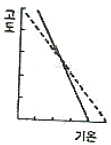
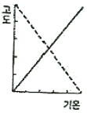
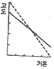
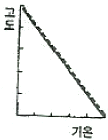
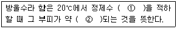
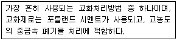

환경기능사 (2009-09-27 기출문제)
1과목: 대기오염방지
1. 다음 대기오염물질의 분류 중 발생원에서 직접 외기로 배출되는 1차 오염 물질에 해당하는 것은?
- O3
- PAN
- NH3
- H2O2
(정답률: 59%)

2. 다음 중 연소 시 질소화물의 저감방법으로 가장 거리가 먼 것은?
- 배출가스 재순환
- 2단 연소
- 과잉공기량 증대
- 연소부분 냉각
(정답률: 82%)
3. 다음 중 렝겔만 농도표와 관계가 깊은 것은?
- 매연측정
- 가스크로마토그래프
- 오존농도측정
- 질소산화물 성분분석
(정답률: 73%)
4. 표준상태에서 물 6.6g을 수증기로 만들 때 부피는?
- 5.16L
- 6.22L
- 7.24L
- 8.21L
(정답률: 48%)
5. 수소 15%, 수분 0.5%인 중유의 고위발열량이 12,600kcal/kg일 때, 저위발열량(kcal/kg)은?
- 11,357 kcal/kg
- 11,446 kcal/kg
- 11,787 kcal/kg
- 11,992 kcal/kg
(정답률: 57%)
6. 흡착법에 관한 설명으로 옳지 않은 것은?
- 물리적 흡착 Van der Waals 흡착이라고도 한다.
- 물리적 흡착은 낮은 온도에서 흡착량이 많다.
- 화학적 흡착인 경우 흡착과정이 주로 가역적이며 흡착제의 재생이 용이하다.
- 흡착제는 단위질량당 표면적이 큰 것이 좋다.
(정답률: 79%)
7. 환경체감율에 따른 대기안정도를 나타낸 그림 중 역전상태인 것은? (단, 살선은 환경체감율, 점선은 건조단열체감율이다.)




(정답률: 79%)
8. 과잉공기비 m을 크게 (m>1) 하였을 때의 특성으로 옳지 않은 것은?
- 연소가스 중 CO농도가 높아져 산업공해의 원인이 된다,
- 통풍력이 강하여 배기가스에 의한 열손실이 크다.
- 배기가스의 온도 저하 및 SOx, NOx 등의 생성물이 증가한다.
- 연소실의 냉각효과를 가져온다.
(정답률: 52%)
9. 충전탑(packed tower)에 채워지는 충전물의 구비조건으로 틀린 것은?
- 단위용적에 대하여 비표면적이 작을 것
- 마찰저항이 작을 것
- 압력손실이 작고 충전밀도가 클 것
- 내식성과 내열성 클 것
(정답률: 55%)
10. 다음 중 헨리의법칙에 관한 설명으로 가장 적합한 것은?
- 기체의 용매에 대한 용해도가 높을 경우에만 헨리의 법칙이 성립한다.
- HCl, HF, SO2 등은 헨리의 법칙이 잘 적용되는 가스 이다.
- 일정온도에서 특정 유해 가스의 압력은 용해가스의 액중 농도에 비례한다,
- 헨리정수는 온도변화에 상관없이 동일성분 가스는 항상 동일한 값을 가진다.
(정답률: 47%)
11. 다음 중 중력 집진장치에 대한 설명으로 옳지 않은 것은?
- 침강실 입구폭이 클수록 유속이 느려지며 미세한 입자가 포집된다,
- 취급입경은 0.1~10㎛이며, 유지비용은 비싼편이다.
- 운전시 압력손실은 5~15mmH2O로 낮다.
- 침강실의 높이가 낮고, 수평길이가 길수록 집진율이 높아진다.
(정답률: 49%)
12. 직경이 300mm인 관에 18m3/min의 유량으로 유체가 흐르고 있다. 이 관 단면에서의 유체 유속(m/s)은?
- 약 3.1m/s
- 약 4.2m/s
- 약 5.3m/s
- 약 8.1 m/s
(정답률: 48%)
13. 온실효과 및 온난화에 관한 설명 옳지 않은 것은?
- 교토의정서는 지구온난화 규제 및 방지와 관련한 국제 협약이다.
- 온실효과를 일으키는 물질로는 CO2, CH4, N2O 등이 있다.
- CO2의 약 60배 정도를 함유 한다.
- 대기 중의 CO2는 태양광선 중 자외선을 흡수하여 온실 효과를 일으킨다.
(정답률: 48%)
14. A기체와 물이 30℃에서 평형상태 있다. 기상에서의 A의 분입이 40mmHg일 때, 수중에서의 A기체의 액중 농도는? (단, 30℃에서 A기체의 물에 대한 헨리상수는 1.60×101(atm ·m3/kmol)이다.)
- 2.29×10-3 koml/m3
- 3.29×10-3 koml/m3
- 2.29×10-2 koml/m3
- 3.29×10-2 koml/m3
(정답률: 51%)
15. 백필터(Bag Filter)의 특징으로 틀린 것은?
- 폭발성 및 점착성 먼지 제거가 곤란하다.
- 수분에 대한 적응성이 낮으며, 유지비용이 많이 든다.
- 여과 속도가 클수록 집진효율이 커진다.
- 가스 온도에 른 여재의 사용이 제한된다,
(정답률: 43%)
2과목: 폐수처리
16. 해수의 특성에 관한 설명으로 옳지 않은 것은?
- 해수 내 전체질소 중 35% 정도는 암모니아성 질소, 유기질소 형태이다.
- 해수의 pH는 약 5.6 정도로 약산성이다.
- 해수의 주요 성분 농도비는 거의 일정하다.
- 해수의 Mg/Ca 비는 담수에 비하여 큰 편이다.
(정답률: 69%)
17. 직경 1m의 콘크리트 관을 20℃의 물이 동수구배 0.01로 흐르고 있다. 맨닝(Manning) 공식에 의해 평균 유속을 구하면? (단, n=0.014 이다.)
- 1.42 m/s
- 2.83 m/s
- 4.62 m/s
- 5.71 m/s
(정답률: 47%)
18. A폐수의 응집 처리를 위해 Jar test를 하였다. 폐수시료 300mL에 대하여 0.2%의 황산알루미늄 15mL를 넣었을 때 가장 좋은 결과가 나왔다. 이 경우 황산알루미늄의 사용량은 폐수시료에 대하여 몇 mg/L 인가?
- 10 mg/L
- 50 mg/L
- 100 mg/L
- 150 mg/L
(정답률: 42%)
19. 생물학적 원리를 이용한 하 · 폐수 고도처리공법 중 A/O 공법의 일반적인 공정의 순서로 가장 적합 한 것은?
- 혐기조 → 호기조 → 침전지
- 무산소조 → 호기조 → 무산소조 → 재포기조 → 침전지
- 호기조 → 무산소조 → 침전지
- 혐기조 → 무산소조 → 호기조 → 무산소조 → 침전지
(정답률: 55%)
20. 0.01N-NaOH 용액의 농도를 ppm으로 옳게 나타낸 것은?
- 40
- 400
- 4000
- 40000
(정답률: 50%)
21. 다음 중 활성슬러지공법으로 하수처리 시 주로 사상성미생물의 이상번식으로 2차침전지에서 침전성이 불량한 슬러지가 침전되지 못하고 유출되는 현상을 의미하는 것은?
- 슬러지 벌킹
- 슬러지 시딩
- 연못화
- 역세
(정답률: 80%)
22. 다음 중 인체에 만성 중독증상으로 카네미유증을 발생시키는 유해물질은?
- PCB
- Mn
- As
- Cd
(정답률: 75%)
23. A공장의 최종 방류수 4000m3/day에 염소를 60kg/day로 주입하여 방류하고 있다. 염소주입 후 잔류염소량이 3mg/L이었다면 이 때 염소 요구량은 몇 mg/L 인가?
- 12 mg/L
- 17 mg/L
- 20 mg/L
- 23 mg/L
(정답률: 25%)
24. 수질 오염공정시험기준상 윙클러-아지드화나트륨 변법에 의한 DO 측정 시 표준적정액으로 옳은 것은?
- 0.025N Na2S2O3
- 0.025N Na2C2O4
- 0.025N KMnO4
- 0.025N K2Cr2O7
(정답률: 37%)
25. 다음 중 활성슬러지공법으로 폐수를 처리하는 경우 침전성이 좋은 슬러지가 최종침전지에서 떠 오르는 슬러지 부상(sludgerising)을 일으키는 원인으로 가장 적합한 것은?
- 층유 형성
- 이온전도도 차
- 탈질 작용
- 색도 차
(정답률: 68%)
26. 다음 중 황산알루미늄에 비하여 처리수의 pH 강하가 적고 알칼리 소비량도 적은 무기성 고분자 응집제는?
- PAC(poly aluminium chloride)
- ABS(alkyl benzene sulfonate)
- PCB(poly chlorinated biphenyl)
- PCDD(polychlorinated dibenzo -p- dioxin)
(정답률: 55%)
27. 수질오염공정시험기준상 생물화학적 산소요구량 측정방법에 관한 설명으로 옳지 않은 것은?
- 시료를 20℃에서 5일간 저장하여 두었을 때 시료 중의 호기성 미생물의 증식과 호흡작용에 의하여 소비되는 용존산소의 양으로부터 측정하는 방법이다.
- pH가 6.5~8.5의 범위를 벗어나는 시료는 염산(1+1) 또는 40% 수산화나트륨 용액으로 시료를 중화하는데 이 때 넣어주는 산 또는 알칼리의 양은 시료량의 5%가 넘지 않도록 하여야 한다.
- 공장폐수나 혐기성 발효의 상태에 있는 시료는 호기성 산화에 필요한 미생물을 식종하여야 한다.
- 수온이 20℃ 이하이거나 20℃일 때의 용존산소 함유량이 포화량 이상으로 과포화 되어 있을 때에는 수온을 23~25℃로하여 15분간 통기하고 방냉하여 수온을 20℃로 한다.
(정답률: 44%)
28. 다음 중 용존공기 부상법에서 공기와 고형물간의 비를 나타낸 것은?
- A/S 비
- F/M 비
- C/N 비
- SVI 비
(정답률: 42%)
29. 다음은 수질오염공정시험기준상 방울수에 대한 설명이다. ( ) 안에 알맞은 것은?

- ① 10방울, ② 1mL
- ① 20방울, ② 1mL
- ① 10방울, ② 0.1mL
- ① 20방울, ② 0.1mL
(정답률: 77%)
30. 스톡스법칙에 따른 입자의 침전속도에 관한 설명으로 틀린 것은?
- 침전속도는 입자와 물의 밀도차에 비례한다.
- 침전속도는 중력가속도에 비례한다.
- 침전속도는 입자지름의 제곱에 반비례한다.
- 침전속도는 물의 점도에 반비례한다.
(정답률: 62%)
31. pH 9인 용액의 [OH-]농도(mol/L)는?
- 10-1
- 10-5
- 10-9
- 10-11
(정답률: 46%)
32. 살수여상에서 발생하는 연못화 현상의 원인으로 가장 거리가 먼 것은?
- 유기물 부하량이 너무 적어 처리가 되지 않을 경우
- 매질이 너무 작거나 균일하지 못한 경우
- 미생물이 점막이 과도하게 탈리되어 공국울 메울 경우
- 최조침전지에서 현탁고형물이 충분히 제거되지 않을 경우
(정답률: 43%)
33. 활성슬러지공법으로 하 (폐)수를 처리하는 과정에서 발생하는 각종 슬러지에 관한 설명으로 옳은 것은?
- 1차슬러지(primary setting sludge)는 포기조 바닥에 퇴적된 슬러지이다.
- 잉여슬러지(excess sludge)는 최초침전지에서 발생한 슬러지로 포기조에 투입된다.
- 반송슬러지(return sludge)는 최종침전지에서 발생하는 활성슬러지로 포기조에 재투입되는 슬러지이다.
- 소화슬러지(digested sludge)는 혐기성 소화조 내부에서 안정화되지 못하고 부상하는 스컴의 일종이다.
(정답률: 55%)
34. 함수율 98%(중량)의 슬러지를 농축하여 함수율 94%(중량)인 농축 슬러지를 얻었다. 이 때 슬러지의용적은 어떻게 변화되는가? (단, 슬러지 비중은 모두 1.0으로 가정한다.)
- 원래의 1/2
- 원래의 1/3
- 원래의 1/6
- 원래의 1/9
(정답률: 65%)
35. 유기물 과다 유입에 따른 수질오염 현상으로 가장 거리가 먼 것은?
- DO 농도의 감소
- 혐기 상태로 변화
- 어패류의 폐사현상
- BOD 농도의 감소
(정답률: 50%)
3과목: 폐기물처리
36. 수분 함유량 10%인 쓰레기를 건조시켜 수분 함유량을 5%로 하기 위해 쓰레기 1톤당 증발시켜야 하는 수분의 양은? (단, 쓰레기 비준은 1.0)
- 10.0 kg
- 41.4 kg
- 52.6kg
- 100kg
(정답률: 51%)
37. 쓰레기의 성상분석 및 시료 채취방법으로 가장 거리가 먼 것은?
- 지역 쓰레기의 성상 파악을 위해서는 적어도 년 4회의 측정이 필요하다.
- 수분의 평균치를 알기 위해서는 비오는 날의 수집은 피하는 것이 바람직하다
- 1회의 시료채취는 적어도 쓰레기의 축소작업 개시부터 24시간 이내에 완료하는 것이 바람직하다.
- 쓰레기 시료 채취작업은 될 수 있는 한 신속하게 진행한다.
(정답률: 51%)
38. 슬러지 내의 수분 중 일반적으로 가장 많은 양을 차지하며 고형물질과 직접 결합해 있지 않기 때문에 농축 등의 방법으로 용이하게 분리할 수 있는 수분은?
- 간극수
- 모관결합수
- 부착수
- 내부수
(정답률: 67%)
39. 폐기물공정시험기준(방법)에 의거 기름성분을 중량법(노말헥산 추출시험방법)으로 분석하는 방법에 관한 설명으로 옳지 않은 것은?
- 노말헥산층에 용핵되는 물질을 노말헥산으로 추출하여 증발시킨 잔류물의 무게로부터 구하는 방법이다.
- 정량범위는 5~200mg이고, 표준편차율은 5~20% 이다.
- 전기맨틀의 온도를 1⑤~110℃로 유지하면서 1mL/min 속도로 증류한다.
- 수분제거를 위해 무수황산나트륨을 넣는다.
(정답률: 42%)
40. 수거된 폐기물을 압축하는 이유로 거리가 먼 것은?
- 저장에 필요한 용적을 줄이기 위해
- 수송 시 부피를 감소시키기 위해
- 수소가 많은 상태에서 액체연료를 회수하는 방법이다.
- 200~350℃ 정도의 산소가 없는 상태에서 고압의 조건으로 유기물을 분해하여 기체의 연료를 회수하는 방법이다.
(정답률: 41%)
41. 다음 중 슬러지 탈수 방법으로 가장 거리가 먼 것은?
- 원심분리
- 산화지
- 진공여과
- 벨트프레스
(정답률: 62%)
42. "열분해"에 대한 설명으로 가장 적합한 것은?
- 일반적으로 이론공기가 공극되는 상태에서 스팀을 주입하는 방법이다.
- 공기가 부족한 상태에서 폐기물을 연소시켜 고체, 액체 및 기체 상태의 연료를 생산하는 공정이다.
- 수소가 많은 상태에서 액체연료를 회수하는 방법이다.
- 200~350℃ 정도의 산소가 없는 상태에서 고압의 조건으로 유기물을 분해하여 기체의 연료를 회수하는 방법이다.
(정답률: 37%)
43. 다음 중 슬러지의 탈수 특성을 나타내는 인자로 가장 적합한 것은?
- 여과비저항
- 균등계수
- 알칼리도
- 유효경
(정답률: 53%)
44. 다음 중 폐기물의 퇴비화 공정에서 유지시켜 주어야 할 최적 조건으로 가장 적합한 것은?
- 온도 : 20±2℃
- 수분 : 5~10%
- C/N 비율 : 100~150
- pH : 6~8
(정답률: 65%)
45. 폐기물을 압축시킨 결과 용적감소율이 75%였다면 이 때의 압축비는?
- 3
- 4
- 5
- 6
(정답률: 51%)
46. A고체연료의 탄소, 수소, 산소 및 황의 무게비가 각각 85%, 5%, 9%, 1%일 때 완전연소에 필요한 이론공기량은? (단, 표준상태 기준)
- 1.81 Sm3/kg
- 2.45 Sm3/kg
- 8.62 Sm3/kg
- 10.54 Sm3/kg
(정답률: 39%)
47. 생활 쓰레기를 매립하였을 경우 다음 중 매립초기 (2단계)에 가스구성비 (부피 %)가 가장 큰 것은? (단, 2단계는 혐기성단계이나 메탄이 형성되지 않는 단계이다.)
- CO2
- C3H8
- H2S
- O3
(정답률: 59%)
48. 다음 중 쓰레기 발생량 산정방법으로 가장 거리가 먼 것은?
- 적채차량 계수 분석법
- 직접 계근법
- 물질수지법
- 직접 경향 분석법
(정답률: 67%)
49. 폐기물의 강열감량 및 유기물함량 시험조건 관한 설명으로 틀린 것은?
- 백금제, 석영제 또는 사기제 도가니 등을 사용한다.
- 강열온도는 600±25℃로 한다.
- 시료는 전기로 안에서 1시간 강열한다.
- 시료에 25% 질산암모늄용액을 넣어 적신다.
(정답률: 44%)
50. 다음은 폐기물의 고화처리방법에 관한 설명이다. 가장 적합한 것은?

- 석화기초법
- 피막형성법
- 시멘트기초법
- 자가시멘트법
(정답률: 79%)
51. 다음 중 MHT에 대한 설명으로 옳지 않은 것은?
- man·hour/ton을 뜻한다.
- 폐기물의 수거효율을 평가하는 단위로 쓰인다.
- MHT가 클수록 수거효율이 좋다.
- 수거작업간의 노동력을 비교하기 위한 것이다.
(정답률: 74%)
52. 소각로 내의 화상 위에서 폐기물을 태우는 방식으로 플라스틱과 같이 열에 의해 용융되는 물질의 소각에 적당하나 연소 효율이 나쁘고 체류시간이 길고 교반력이 약하여 국부적으로 가열될 염려가 있는 소각로 형식으로 가장 적합한 것은?
- 액체 주입형 소각
- 고정상 소각로
- 유동상 소각로
- 열분해 용융 소각로
(정답률: 74%)
53. 연소가스의 잉여열을 이용하여 보일러에 주입되는 물을 예열함으로써 보일러드럼에 발생되는 열응력을 감소시켜 보일러의 효율을 높이는 장치는?
- 과열기(super heater)
- 재열기(reheater)
- 절탄기(economizer_
- 공기예열기(air preheater)
(정답률: 68%)
54. 폐기물을 분리하여 재활용하고자 할 때 철금속류를 회수하는 가장 적합한 방법은?
- Air Separation
- Hand Separation
- Magnetic Separtion
- Screening
(정답률: 67%)
55. A도시에 인구 100,000명이 거주하고, 1인당 쓰레기 발생량은 평균 0.9kg/인·일이다. 이 쓰레기를 50명이 수거한다면 수거 능력(MHT)은? (단, 1일 작업시간은 8시간, 1년 작업일수는 300일이다.0
- 3.46 MHT
- 3.65 MHT
- 3.87 MHT
- 3.98 MHT
(정답률: 42%)
4과목: 소음 진동학
56. 다음 중 진동레벨의 성능기준으로 옳지 않은 것은?
- 측정가능 주파수 범위 : 1 ~ 90 Hz 이상
- 측정가능 진동레벨 범위 : 45 ~ 120 dB 이상
- 레벨렌지 변환기의 전환오차 : 0.5 dB 이내
- 지시계기의 눈금오차 : 1 dB 이내
(정답률: 48%)
57. 다음 중 종파(소밀파)에 해당하는 것은?
- 물결파
- 전자기파
- 음파
- 지진파의 S파
(정답률: 72%)
58. 80dB의 소음과 90dB의 소음이 동시에 발생할 경우 합성소음레벨은?
- 약 80 dB
- 약 85 dB
- 약 90 dB
- 약 93 dB
(정답률: 35%)
59. 다음 중 소음 · 진동에 관련한 용여의 정의로 옳지 않은 것은?
- 반사음은 한 매질중의 음파가 다른 매질의 경계면에 입사한 후 진행방향을 변경하여 본래의 매질중으로 되돌아오는 음을 말한다.
- 정상소음도은 시간적으로 변동하지 아니하거나 또는 변동폭이 작은 소음을 말한다.
- 등가소음도는 임의의 측정시간동안 발생한 변동소음의 총 에너지를 같은 시간내의 정상소음의 에너지로 등가하여 얻어진 소음도를 말한다.
- 지발발파는 수 시간내에 시간차를 두고 발파하는 것을 말한다.
(정답률: 37%)
60. 파동이 진행할 때 장애물 뒤쪽으로 음이 전파되는 현상을 무엇이라 하는가?
- 회절
- 굴절
- 음성
- 흡음
(정답률: 68%)